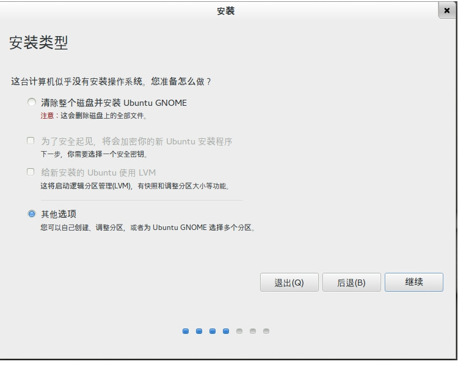
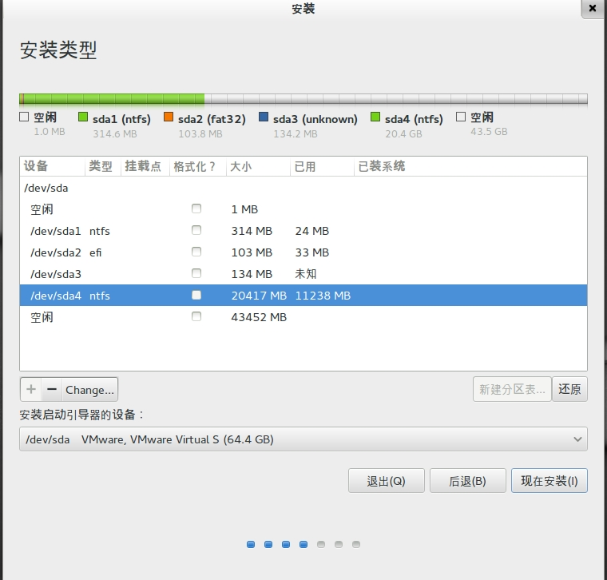
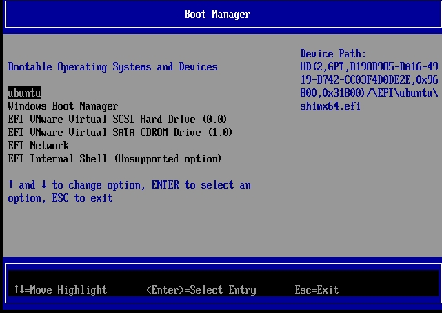
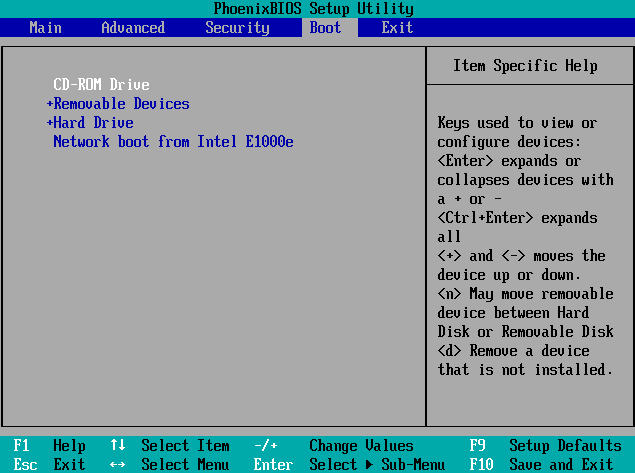
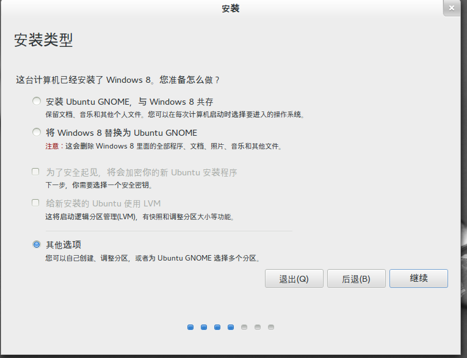
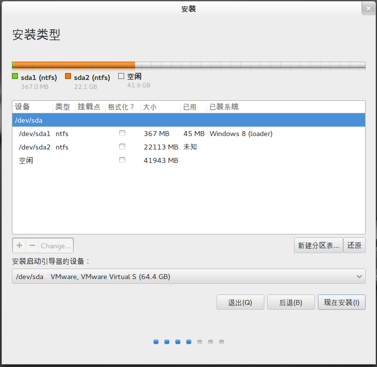
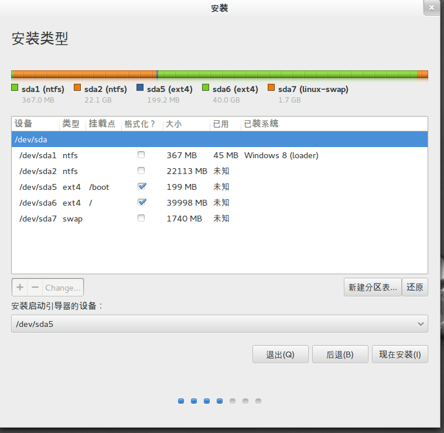
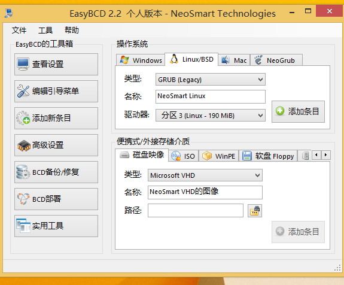
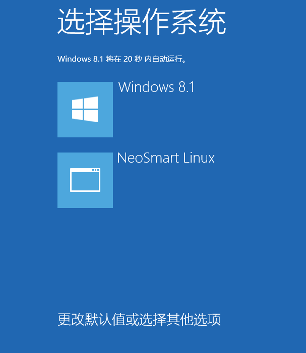

1 起步
1.0 这个是干什么的
这个是干什么的 首先,你看到的这篇文章,不是一篇Linux的练级攻略本,也不是一篇快速入门Linux的技术文章,而是一篇笔者自己安装使用linux的游记,笔者做这个的想法,只是想稍微介绍一下Linux,而且可以尽可能减少入门的难度. 因为一般情况下,直接入手Linux的道路会相当曲折
如何阅读呢？本文的大部分内容都是可以直接 跟着做 的,笔者会尽量保证文档的更新,而且会尽可能的考虑到所有的情况,一般情况下,出入不会很大,你可以跟随着我的思路过程,接触了解Linux,同时,大部分的内容,我都提供了更加深入的内容,如果你有感兴趣可以进行更多的阅读和学习,得到的收获自然也是不同的.附加的内容,都以超链接的形式标注在文档上面.
其次,希望读者可以有培养一种先搜后问的态度,你所看到的大部分内容,都是笔者集合了大部分互联网上的优秀资源总结出来的,,当然有问题不解的可以给我发邮件：emlcjnil#gmail.com, 也欢迎各路大牛指证.
为什么是Linux？Linux是开源的,是免费的,同时也是充满魅力的,关于win的糟糕可以查看 Windows编程革命简史, 而学习Linux可以获得各种各样的收获,这里就不赘述Linux的好处了.同样,这篇文档里面所提到的软件方法,都是可以“免费”得到的,不会鼓动大家去下载或者使用盗版软件.
同时,本文档尊崇开源的精神,你可以将本文档的东西转载或发表到任何地方,但是希望能够注明来源.本站所发表的每一张图片都是原创的,笔者并没有加上优雅(且简单)的水印,是希望这种崇尚自由的精神贯穿其中.
最后,为了加强文档的有趣性,笔者会加上适当的感悟或者说是吐槽,为了不影响文档的内容,这一部分会以小字出现.
1.1 安装之前的准备
1.1.1 安装之前的两个问题
安装的部分是针对win主机的Mac不太了解.首先,你需要明确你安装Linux的目的,究竟是玩一玩耍酷,还是准备长期使用。如果是前者,我推荐可以在虚拟机下进行安装,因为这样维护成本低,也不会出现莫名其妙的错误,如果是后者,那么就是是双系统了,可以很方便的回到Win的怀抱。而且如果想要完整的学习Linux,在实机下装是必须的!
我这里先假设读者是准备长期使用Linux,那么你需要面对的是如下几个问题,关系到双系统的安装和能否成功引导启动.
- 启动类型(Boot Mode)是UEFI还是Legacy
- 是双硬盘还是单硬盘
首先,什么是UEFI？请参阅:wiki:UEFI ,而大部分2013年暑假买到的电脑,基本都是UEFI的BIOS 这里我只是笼统的说了一下UEFI,实际上UEFI不是BIOS的补充 ,而读者必须明白的是,UEFI模式下的安装比较复杂,稍有影响,就会导致你的WIndows 8无法正常引导(但是按照本文来操作,不太可能出现这种情况),不过鉴于这种情况太复杂,我还是建议读者最好使用Legacy模式安装. 具体启动类型的查看需.要进入到 BIOS里面,不同主板BIOS进入方式不同,开机是狂按F2或者ESC或者DELETE,(.如果是很好看的图形化界面,那就是UEFI),然后找到BOOT MODE,检查以下是UEFI还是Legacy.
如果是Legacy,则不用担心这些问题,安装可能相对来说麻烦一些,但基本上是不会出现启动不了的问题的.
其次,是多硬盘,还是单硬盘.如果你确信你的硬盘是2个及以上的话,那么恭喜你,第一个问题你完全不用考虑!因为无论哪一种方式安装,都会是轻松快捷,当然混合硬盘不属于双硬盘.
1.1.2 启动介质的选择和安装
Linux的发行版有许多种,一般来说,使用起来的难易程度逼格是这样排序的debian/Ubuntu < Fedora/openSUSE < Arch/Gentoo,而最后面的2个还需要自己编译才能使用,公认的是,如果你可以自己独立安装好Gentoo,那么算是对Linux有了相当全面的了解.
本文目前介绍的是Ubuntu Gnome 13.10 笔者也在考虑添加更加"正常"的发行版,比如openSUSE,为什么选这个？因为Ubuntu目前可以说是人气最高(之一)的Linux发行版,BUG较少,比如说我在Fedora, openSUSE下都遇到了奇怪的问题,而且由于Ubuntu的高人气,很多问题都可以很方便的Google到,至于什么是Gnome,可以参阅:wiki:GNOME,选择GNOME是因为其定制性强,而且z足够好看,虽然这完全不是重点可以带给你抛弃Win的喜悦.不选择Ubuntu原生的Unity,是因为笔者对其不太习惯,而且会有很多莫名其妙的问题.
下载地址:Ubuntu-Gnome
而如何制作启动介质呢？刻成光盘么？完全没有必要,我们只需要将其烧录到U盘即可,在Win下下载一个ultraiso的试用版吧不要破解！.然后选择[启动]--[写入硬盘镜像]烧录到U盘,这样启动介质就做好了!
1.2 安装过程
1.2.1 UEFI + 单硬盘 安装双系统
考虑到这种情况是最普遍的,所以从这种情况先说起.
首先,我们需要插入我们准备好的U盘,然后在win8里面选重启,为什么？请参阅 Win8快速启动的秘密,如果你是win7,那大部分情况下你在确定启动格式的时候是错的(因为你的启动类型不太可能是UEFI).重启的时候狂按ESC(不同的主板可能不太一样,进入Boot Manager),见下图

2.4添加请务必在主板上关闭Secure Boot | 反Secure Boot 垄断,否则无法成功引导的. 我是通过光盘启动的,从U盘启动只需要选择U盘的那一项(注意,一定要选带UEFI字样的启动项),接下来就是下一步下一步,相信这一点不会难倒读者,但是请注意安装类型!一定要选择其他选项,也就是说我们需要自己分区.

下面是初始的样子,前四个分区都是属于windows的,也就是说windows是3个你看不见的盘+系统盘+其他的盘(指UEFI下的win8),可以这样理解sda1~sda3都是win的引导分区,sda4是win的安装分区 ,而我们需要单独对剩下的空间进行操作,见下下图,磁盘的分区部分,请参阅: 鸟哥的Linux私房菜：磁盘划分

在安装系统的时候,这一点由于太激动没有截取到,后来我重新p了上去TAT具体说来,最简单是划分三个分区/boot(采用ext2的格式) 和/ (挂载根目录,采用默认的ext4) 和/swap(也就是挂载交换空间).最重要的,请务必确保引导文件安装在/boot分区上面!!!!
接下来就是漫长的等待了,不过相信读者安装完毕之后重新启动的时候绝大情况下会进入windows的引导,那我们的Linux去哪儿了呢？只要在开机的时候狂按ESC进去Boot Manager,就可以看到惊喜的Ubuntu了!之后每次开机,只要在Boot Manager中就可有选择我们想进入的系统,但是请注意,请务必在进入Ubuntu之前,windows选重启,而不是关机!

1.2.2 Legacy + 单硬盘安装双系统
其实Legacy下的安装也没有多大的区别,只是开始需要在BIOS里面确定U盘为第一启动(我这里是光盘)

然后从U盘启动,一路正常的下一步,还是老样子,选择其他选项,自己分区.

Legacy模式下安装的win8就不太一样了,引导分区从3个变成了一个,如下图

设置如下图,还是要注意引导器安装在/boot下

之后还是只会进入win8的引导,这个时候操作不太一样,我们需要在win8下安装EasyBcd这个软件,然后用它为Linux加装一个引导,操作十分简便,如下图(要注意引导选择Linux的/boot分区哦)

之后再重启,就会在Win8的引导里面出现Linux的引导了(因为win8很霸道,这样是比较方便的达成双系统的目的了)

1.2.3 双硬盘安装双系统
对于双硬盘来说,无论那一种都比较简单,因为引导文件是独立的,不会出现诡异的无法引导的问题,但是要注意的是,最好可以让系统先识别出Linux的硬盘,因为贴心的Linux会方便的识别Win的引导.
Now,Welcome to Linux World!